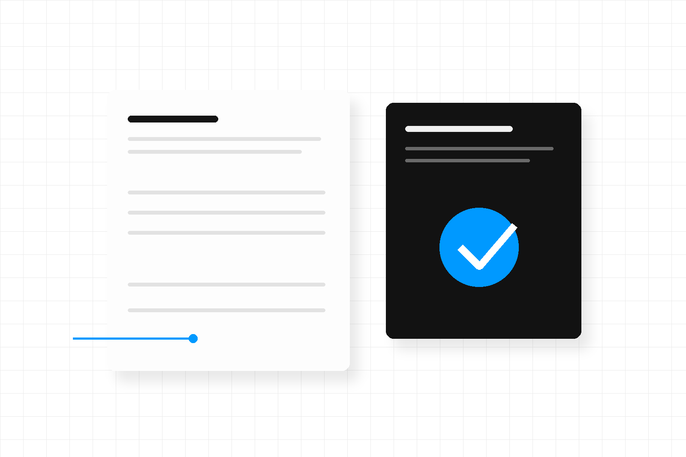
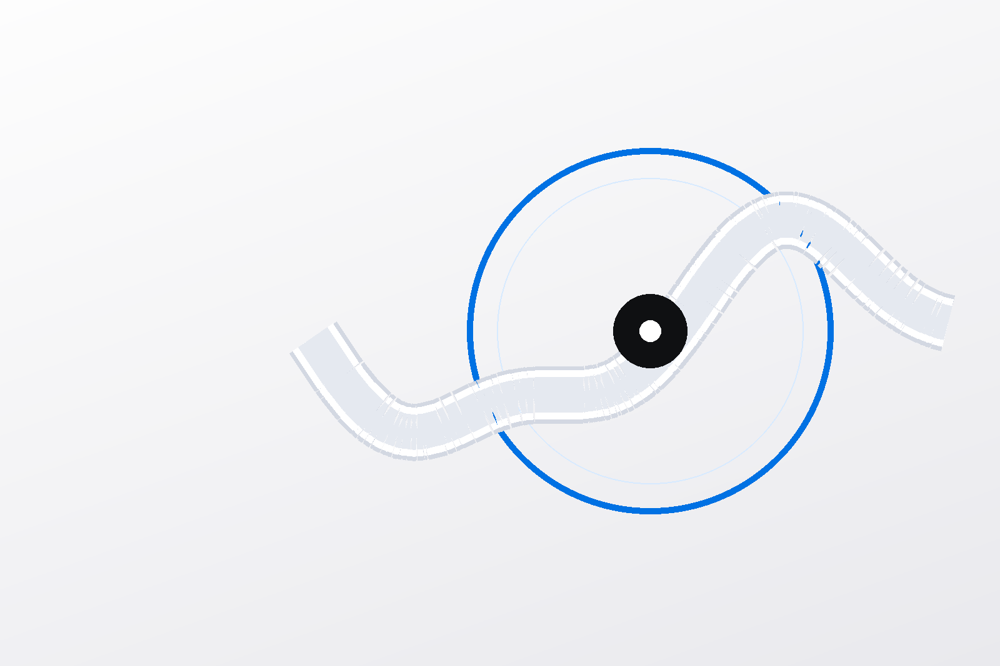
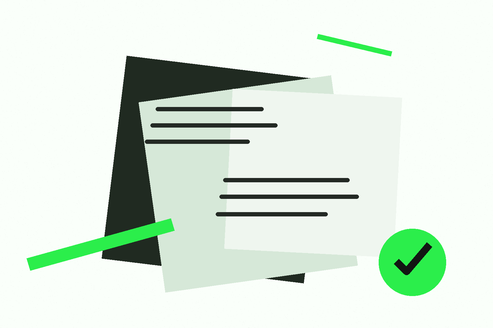
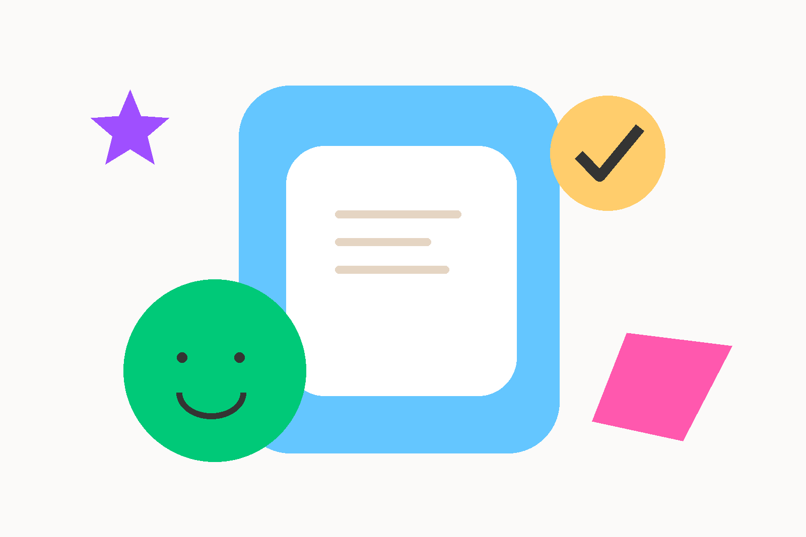

Five rebuilt art directions
One service.
Five complete ways to tell it.
Each route is a full narrative, not a color swap: a distinct composition, image language, rhythm, conversion interaction and limited motion system. The content stays evidence-safe across all five.
01 · editorial calmRevolut
Revolut
direction
Air, restraint and a cobalt service thread.

02 · utility instrumentCal.com
Cal.com
direction
A practical service path, built like a useful starting point.

03 · clinical precisionAugen
Augen
direction
A sculptural review loop makes accountability visible.

04 · editorial convictionRefero
Refero
direction
Broadsheet scale, green highlighter and an assertive point of view.

05 · human momentumFamily
Family
direction
Tactile reassurance without making the work look unserious.